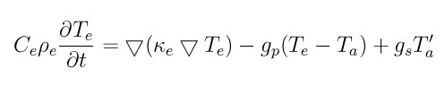

fix ttm command¶
Syntax¶
fix ID group-ID ttm seed C_e rho_e kappa_e gamma_p gamma_s v_0 Nx Ny Nz T_infile N T_outfile
ID, group-ID are documented in fix command
ttm = style name of this fix command
seed = random number seed to use for white noise (positive integer)
remaining arguments for fix ttm:
C_e = electronic specific heat (energy/(electron*temperature) units) rho_e = electronic density (electrons/volume units) kappa_e = electronic thermal conductivity (energy/(time*distance*temperature) units) gamma_p = friction coefficient due to electron-ion interactions (mass/time units) gamma_s = friction coefficient due to electronic stopping (mass/time units) v_0 = electronic stopping critical velocity (velocity units) Nx = number of thermal solve grid points in the x-direction (positive integer) Ny = number of thermal solve grid points in the y-direction (positive integer) Nz = number of thermal solve grid points in the z-direction (positive integer) T_infile = filename to read initial electronic temperature from N = dump TTM temperatures every this many timesteps, 0 = no dump T_outfile = filename to write TTM temperatures to (only needed if N > 0)
Examples¶
fix 2 all ttm 699489 1.0 1.0 10 0.1 0.0 2.0 1 12 1 initialTs 1000 T.out
fix 2 all ttm 123456 1.0 1.0 1.0 1.0 1.0 5.0 5 5 5 Te.in 1 Te.out
Description¶
Use a two-temperature model (TTM) to represent heat transfer through and between electronic and atomic subsystems. LAMMPS models the atomic subsystem as usual with a molecular dynamics model and the classical force field specified by the user, but the electronic subsystem is modeled as a continuum, or a background “gas”, on a regular grid. Energy can be transferred spatially within the grid representing the electrons. Energy can also be transferred between the electronic and the atomic subsystems. The algorithm underlying this fix was derived by D. M. Duffy and A. M. Rutherford and is discussed in two J Physics: Condensed Matter papers: (Duffy) and (Rutherford). They used this algorithm in cascade simulations where a primary knock-on atom (PKA) was initialized with a high velocity to simulate a radiation event.
Heat transfer between the electronic and atomic subsystems is carried out via an inhomogeneous Langevin thermostat. This thermostat differs from the regular Langevin thermostat (fix langevin) in three important ways. First, the Langevin thermostat is applied uniformly to all atoms in the user-specified group for a single target temperature, whereas the TTM fix applies Langevin thermostatting locally to atoms within the volumes represented by the user-specified grid points with a target temperature specific to that grid point. Second, the Langevin thermostat couples the temperature of the atoms to an infinite heat reservoir, whereas the heat reservoir for fix TTM is finite and represents the local electrons. Third, the TTM fix allows users to specify not just one friction coefficient, but rather two independent friction coefficients: one for the electron-ion interactions (gamma_p), and one for electron stopping (gamma_s).
When the friction coefficient due to electron stopping, gamma_s, is non-zero, electron stopping effects are included for atoms moving faster than the electron stopping critical velocity, v_0. For further details about this algorithm, see (Duffy) and (Rutherford).
Energy transport within the electronic subsystem is solved according to the heat diffusion equation with added source terms for heat transfer between the subsystems:
where C_e is the specific heat, rho_e is the density, kappa_e is the thermal conductivity, T is temperature, the “e” and “a” subscripts represent electronic and atomic subsystems respectively, g_p is the coupling constant for the electron-ion interaction, and g_s is the electron stopping coupling parameter. C_e, rho_e, and kappa_e are specified as parameters to the fix. The other quantities are derived. The form of the heat diffusion equation used here is almost the same as that in equation 6 of (Duffy), with the exception that the electronic density is explicitly represented, rather than being part of the specific heat parameter.
Currently, this fix assumes that none of the user-supplied parameters will vary with temperature. This assumption can be relaxed by modifying the source code to include the desired temperature dependency and functional form for any of the parameters. Note that (Duffy) used a tanh() functional form for the temperature dependence of the electronic specific heat, but ignored temperature dependencies of any of the other parameters.
This fix requires use of periodic boundary conditions and a 3D simulation. Periodic boundary conditions are also used in the heat equation solve for the electronic subsystem. This varies from the approach of (Rutherford) where the atomic subsystem was embedded within a larger continuum representation of the electronic subsystem.
The initial electronic temperature input file, T_infile, is a text file LAMMPS reads in with no header and with four numeric columns (ix,iy,iz,Temp) and with a number of rows equal to the number of user-specified grid points (Nx by Ny by Nz). The ix,iy,iz are node indices from 0 to nxnodes-1, etc. For example, the initial electronic temperatures on a 1 by 2 by 3 grid could be specified in a T_infile as follows:
0 0 0 1.0
0 0 1 1.0
0 0 2 1.0
0 1 0 2.0
0 1 1 2.0
0 1 2 2.0
where the electronic temperatures along the y=0 plane have been set to 1.0, and the electronic temperatures along the y=1 plane have been set to 2.0. The order of lines in this file is no important. If all the nodal values are not specified, LAMMPS will generate an error.
The temperature output file, T_oufile, is created and written by this fix. Temperatures for both the electronic and atomic subsystems at every node and every N timesteps are output. If N is specified as zero, no output is generated, and no output filename is needed. The format of the output is as follows. One long line is written every output timestep. The timestep itself is given in the first column. The next Nx*Ny*Nz columns contain the temperatures for the atomic subsystem, and the final Nx*Ny*Nz columns contain the temperatures for the electronic subsystem. The ordering of the Nx*Ny*Nz columns is with the z index varying fastest, y the next fastest, and x the slowest.
This fix does not change the coordinates of its atoms; it only scales their velocities. Thus a time integration fix (e.g. fix nve) should still be used to time integrate the affected atoms. This fix should not normally be used on atoms that have their temperature controlled by another fix - e.g. fix nvt or fix langevin.
This fix computes 2 output quantities stored in a vector of length 2, which can be accessed by various output commands. The first quantity is the total energy of the electronic subsystem. The second quantity is the energy transferred from the electronic to the atomic subsystem on that timestep. Note that the velocity verlet integrator applies the fix ttm forces to the atomic subsystem as two half-step velocity updates: one on the current timestep and one on the subsequent timestep. Consequently, the change in the atomic subsystem energy is lagged by half a timestep relative to the change in the electronic subsystem energy. As a result of this, users may notice slight fluctuations in the sum of the atomic and electronic subsystem energies reported at the end of the timestep.
The vector values calculated by this fix are “extensive”.
Warning
The current implementation creates a copy of the electron grid that overlays the entire simulation domain, for each processor. Values on the grid are summed across all processors. Thus you should insure that this grid is not too large, else your simulation could incur high memory and communication costs.
Restart, fix_modify, output, run start/stop, minimize info:
This fix writes the state of the electronic subsystem and the energy exchange between the subsystems to binary restart files. See the read_restart command for info on how to re-specify a fix in an input script that reads a restart file, so that the operation of the fix continues in an uninterrupted fashion.
Because the state of the random number generator is not saved in the restart files, this means you cannot do “exact” restarts with this fix, where the simulation continues on the same as if no restart had taken place. However, in a statistical sense, a restarted simulation should produce the same behavior.
None of the fix_modify options are relevant to this fix. No global or per-atom quantities are stored by this fix for access by various output commands. No parameter of this fix can be used with the start/stop keywords of the run command. This fix is not invoked during energy minimization.
Restrictions¶
This fix is part of the MISC package. It is only enabled if LAMMPS was built with that package. See the Making LAMMPS section for more info.
This fix can only be used for 3d simulations and orthogonal simulation boxes. You must use periodic boundary conditions with this fix.